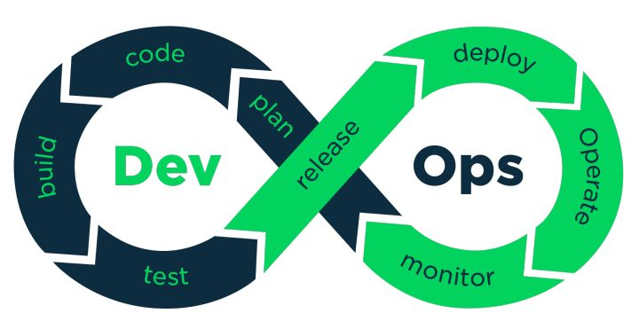
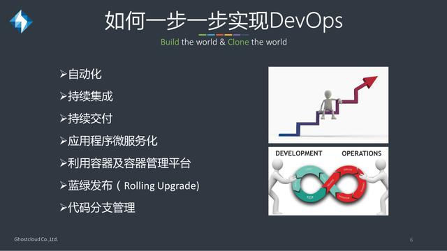
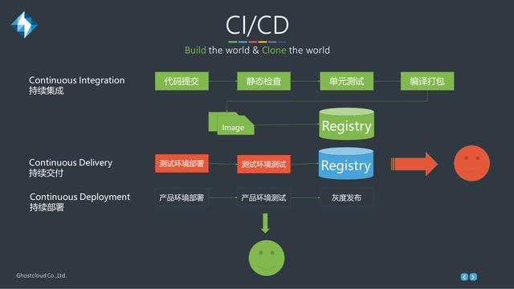
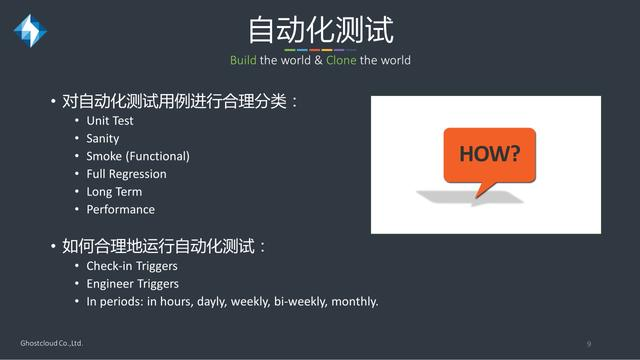
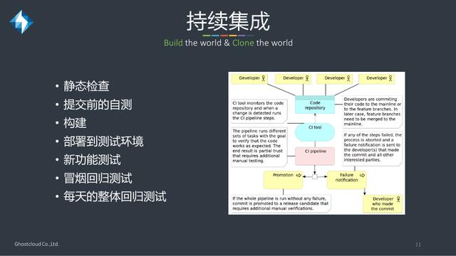

什么是DevOps
DevOps（英文Development和Operations的组合）是一组过程、方法与系统的统称，用于促进开发（应用程序/软件工程）、技术运营和质量保障（QA）部门之间的沟通、协作与整合。它的出现是由于软件行业日益清晰地认识到：为了按时交付软件产品和服务，开发和运营工作必须紧密合作。

我认为DevOps更应该是一种工程师文化，促进研发、测试和运维之间的沟通和闭环协作，共同达成业务目标。同时需要相应的流程和工具去配合，并简化工作，提升效率。
DevOps各个阶段
- 第一阶段：流程化
基于Jenkins和Docker进行实施，能够初步将持续构建、持续部署、持续发布连接在一起，减少手工配置，提升效率（基于本地环境进行实践，尽可能测试出问题，为线上环境做准备）。 - 第二阶段：自动化服务（部分）
基于阿里云EDAS，基本生产环境的服务全部部署在阿里云，通过使用阿里云的服务为线上的应用提供运维、发布、回滚、监控、诊断等；此阶段准备将部分非核心服务进行DevOps化；同时引入自动化测试，UI自动化、接口自动化，提高测试效率。 - 第三阶段：智能化
根据实际的业务情况，通过DevOps提升开发、测试、运维效率




工具说明
目前处于第一阶段，希望通过相应的工具链提升开发的效率，进行持续构建、持续部署（dev、test两个环境），同时在线下环境进行实验。
所需要用到的软件和工具:
- Jenkins
- Dokcer
- IDEA
- Git
主要是上面几种工具，尽可能使用少量的工具，减少开发、测试、运维的学习压力，方便快速上手，同时需要使用的其他软件包会在文档里面列出。
Docker 环境配置
因为众所周知的原因，Docker的下载速度在国内下载速度比较慢，所以采用镜像地址进行安装。
- Windows 环境
Docker for Windows 在Windows上运行Docker。系统要求，Windows10x64位，支持Hyper-V。https://dn-dao-github-mirror.qbox.me/docker/install/windows/InstallDocker.msi
参考’http://www.widuu.com/docker/installation/windows.html'
- Mac 环境
Docker for Mac 在Mac上运行Docker。系统要求，OS X 10.10.3 或者更高版本，至少4G内存，4.3.30版本以前的VirtualBox会与Docker for Mac产生冲突，所以请卸载旧版本的VitrualBox。https://dn-dao-github-mirror.qbox.me/docker/install/mac/Docker.dmg
可参考：http://blog.csdn.net/jiang_xinxing/article/details/58025417
- Linux 环境
1 | #执行以下脚本可以高速安装（适用于Ubuntu，Debian,Centos等大部分Linux） |
如果您的电脑版本过旧，可以使用 Docker Toolbox 在Windows或者Mac上运行Docker。适用于Mac OS X 10.8+ 或者 Windows 7/8.1。https://get.daocloud.io/toolbox/ (自行下载相应的版本，window的选exe文件，Mac 选pkg文件)
Docker 常用命令
1 | docker search XXX #查询docker镜像 |
1 | docker pull XXX #拉取docker 镜像 |
1 | docker images #查看已下载的docker镜像 |
1 | docker run XXX #运行docker容器 |
1 | docker ps #查看正在运行的docker容器 |
1 | docker stop XXX #停止正在运行的容器 |
1 | docker rm -f XXX #删除容器 |
要想更好的使用Docker和各种技术需要不断充电和探索。
部分图片来自 http://blog.csdn.net/ghostcloud2016/article/details/62426612